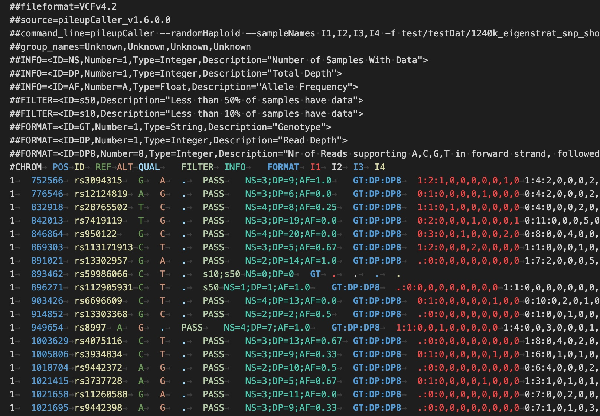

Embracing the Variant Call Format in Ancient Genomics

A major request that emerged from the Peer Review process of our paper on Poseidon was the support for the Variant Call Format. This is the de-facto standard for how to store genetic variation data in the field of human genetics and more broadly in Genetics. The Ancient DNA community has largely settled on simpler formats, perhaps most prominently due to support for EIGENSTRAT or PLINK formats of the popular software packages Eigensoft and Admixtools.
Nevertheless, in contrast to the above two formats, the VCF format is extremely well specified and allows to store some critical features of the data that Eigenstrat and Plink just cannot. One, in my view critical point, is the ability to distinguish between haploid and diploid genotype calls. For example, in the vast majority of cases in the field of ancient genomics, we typically don’t analyse diploid calls, but represent an individual’s genotype by single-reads mapping to a variant. This kind of single-read sampling approach is implemented in the popular software tool pileupCaller.
In VCF format, a diploid genotype call is encoded via entries such as 0/1 or 1/1, while haploid calls are encoded as 0 or 1. Even missing information has this feature: ./. (diploid) and . (haploid). In contrast, in Eigenstrat and Plink, genotypes are always stored as diploids. This is OK for most analyses, but for some calculations that involve allele frequency estimates and their error, for example to compute FST or some F-Statistics, we need to know the total number of haplotypes underlying the data. That is way, for example, our xerxes analysis tool requires GenotypePloidy information from [Janno files].
I think the VCF format has been under-appreciated by the Ancient DNA Community and I think it’s time we use it more. Poseidon is now ready for it, and its flagship tool trident now supports VCF reading (introduced in version 1.5.7.0) and soon also writing (likely being introduced in upcoming version 1.7.0.0).